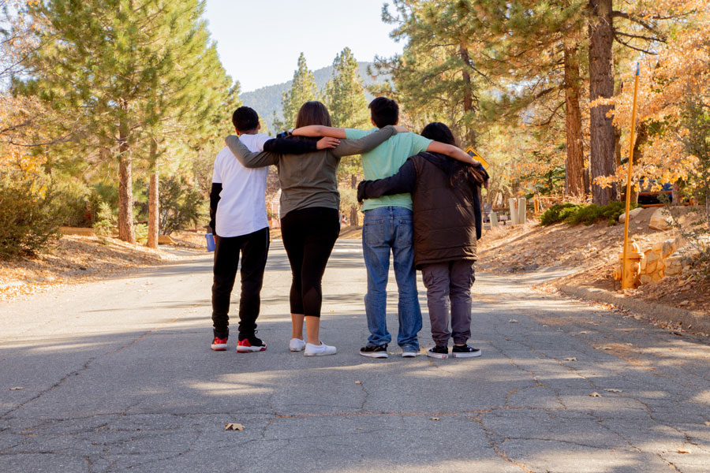

Overnight Adventures program
Many children never have the chance to go more than 25 miles from their homes. The Overnight Adventures program is designed to help Club members (age 14–18) stretch their wings and explore the greater community.
Different trips will allow Club members to explore museums, splash in the surf at the beach, hike National Forest trails, and even tour movie studio back lots. Each trip leaves Friday afternoon and returns Sunday evening.
Overnight Adventure trips do require a nominal fee to help defray the cost of lodging; however, no teen will be turned away for an inability to pay. Club members may exchange 10 hours of work in the Club facility (reception desk duties, cleaning, etc.) to earn credits to defray the costs. Club members who participate in the VolunTeen Enrichment program will also earn credits to help defray associated costs.
